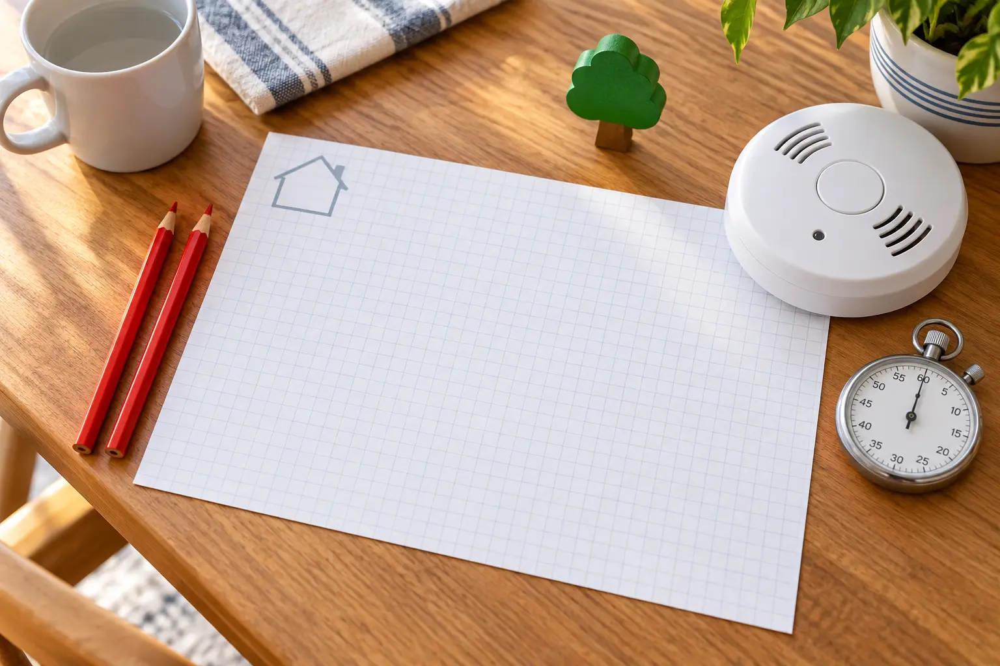

Draw · 5 minutes
Sketch every level with all doors and windows. Point to two possible ways out of each room.
Stop: if an exit is blocked, painted shut, broken or unsafe, fix the condition before calling it a route.
AT HOME · 20 MINUTES · NO SHOPPING
Draw the real home, identify two ways out of every room, walk the primary route, meet outside and fix one obstacle before the next practice.

The U.S. Fire Administration tells households to draw a map showing doors and windows, identify two ways out of every room, keep exits clear, choose an outside meeting place in front of the home and practice with everyone. Those are not decorations for a refrigerator sheet. Each one answers a failure that becomes harder to solve after an alarm sounds.
USFA also says residents may have less than two minutes to escape once a smoke alarm sounds. That is a reason to simplify the plan, not to turn practice into a race. The goal is automatic decisions: recognize the alarm, use the nearest safe route, go to the meeting place, stay out and account for people.
USFA recommends smoke alarms inside every bedroom, outside each separate sleeping area and on every level of the home, including the basement, and says to test alarms at least monthly with the test button. Follow the exact manufacturer instructions and local code for placement, testing, replacement and interconnected systems. Never remove, paint, cover or disable an alarm to make a drill quieter.
If alarms are missing, expired, damaged, repeatedly chirping or not working, that is a maintenance problem—not a reason to pretend the drill is complete. Contact the manufacturer, landlord, local fire department or a qualified alarm professional as appropriate. Electrical work belongs to a qualified professional. The hero image shows a loose conceptual alarm and is not installation guidance.
A second way out may be a window, but identifying it on paper does not make a high window, screen, security bar or portable ladder safe. Do not buy or practice with escape equipment based on a generic article. Ask the local fire department what fits the building, follow the equipment maker’s instructions and involve a qualified professional where installation or structural questions exist.
Tell children this is practice, sound the alarm only by using its approved test function if the manufacturer’s instructions allow, and walk—do not sprint—the primary route. Close doors behind you if doing so is safe and part of the household plan. Everyone continues to the meeting place. Nobody stops on a porch, wanders to a neighbor’s yard or returns inside for an object.
Practice from bedrooms and the most-used living space at different times on different days, but keep this session to one complete route. Children should know how to escape without waiting for an adult who may be unable to reach them, while adults still assign responsibility for infants, young children and anyone who needs assistance.
At the meeting place, one adult performs a head count. Practice saying the home address and that everyone is outside. In a real emergency, call 911 from outside using a mobile phone or a neighbor’s phone. Do not call 911 during a drill. Children need to know that firefighters, not family members, go back inside.
Include pets in the planning conversation but not in a way that delays human escape. Do not assign a child to search for or carry a hiding animal. Tell firefighters about a pet from outside. Keep leashes or carriers only where they do not block an exit; an object beside the door cannot become another obstacle.
Use this short after-action card:
Put the next practice on the family calendar reset. Repeat after moving, changing bedrooms, adding a household member, renovating or discovering that a route does not work. Monthly smoke-alarm testing remains a separate task.
Warn children before sounding a test alarm. Use plain language and rehearse the sequence without the sound first when noise causes distress. USFA offers pictographs that can help households communicate the steps without relying only on text. Keep directions consistent: alarm, outside, meeting place, stay out.
A person who uses mobility equipment, needs medication, sleeps with hearing support or cannot independently operate an exit needs a specific plan. Test door widths, transfer needs and accessible routes in ordinary conditions. Contact the local fire department for planning help, and ask device or alarm professionals about appropriate alerting equipment. Do not improvise carrying techniques or block required equipment in the name of speed.
Use the building’s official emergency plan and know the exit stairs. USFA says high-rise residents should leave the apartment, close the door behind them, pull the fire alarm on the way out, use stairs rather than elevators unless firefighters direct otherwise, go to the outside meeting place and tell the fire department if someone is trapped. Building instructions and emergency personnel take priority over this general guide.
Never wedge a fire door, store gear in a stairwell or assume the elevator will be available. Ask building management how alarms, accessible evacuation and assembly work before an emergency. For travel, use the separate family hotel fire-escape plan; a familiar home route does not transfer automatically to a hotel corridor.
This drill requires paper and a pencil, not a shopping list. Do not buy a decorative evacuation sign, novelty alarm, smoke machine or unverified escape device to make practice feel official. If the home needs alarms, accessibility equipment, door hardware or an escape ladder, choose it only through current code, manufacturer guidance and qualified local help. Safety equipment is not an impulse affiliate category.
A child is frightened: stop the sound, explain the sequence and practice only the walk to the meeting place. The map is hard: use USFA’s free pictographs or photograph each ordinary exit without sharing the home layout publicly. An exit fails: stop, block that route from the plan and assign the repair. The adult is depleted: choose the meeting place, walk one route and schedule the drawing for tomorrow. Family members are absent: do not mark them trained; repeat when everyone is present.
Like the family lost-kid plan, this system works because the child has one simple place to go and a rule to stay there. The difference is absolute: during a fire, nobody goes back inside.
Contact the local fire department, building management or an appropriate qualified professional when the home has barred windows, security gates, upper-story sleeping rooms, a household member who cannot self-evacuate, unreliable alarms, unusual fuels or oxygen equipment, or no obvious second route. This page cannot inspect the building and should never overrule local fire code, a manufacturer’s instructions or emergency responders.
MAKE THE DAY COUNT
Build the plan your family can finish well, then leave enough energy for the next part of the day.
More family plans